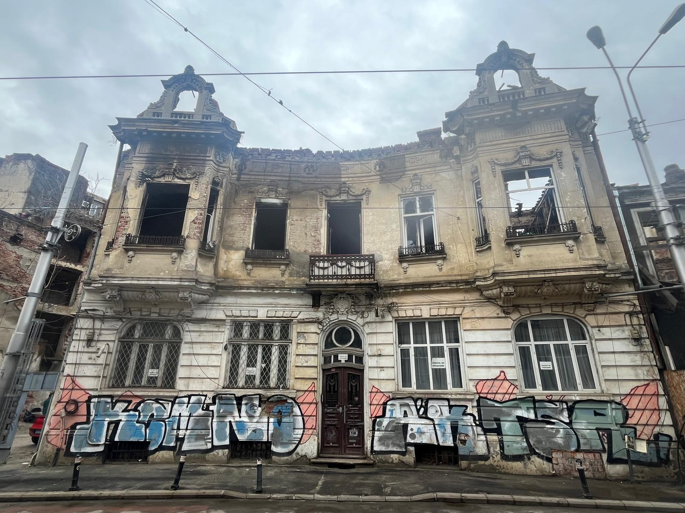
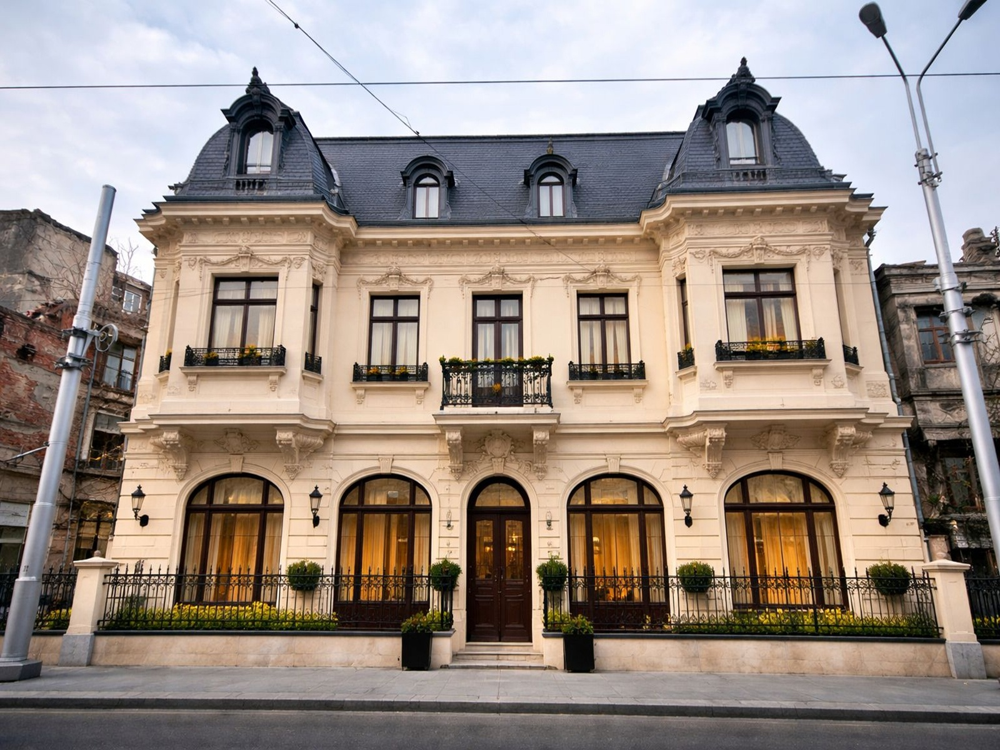
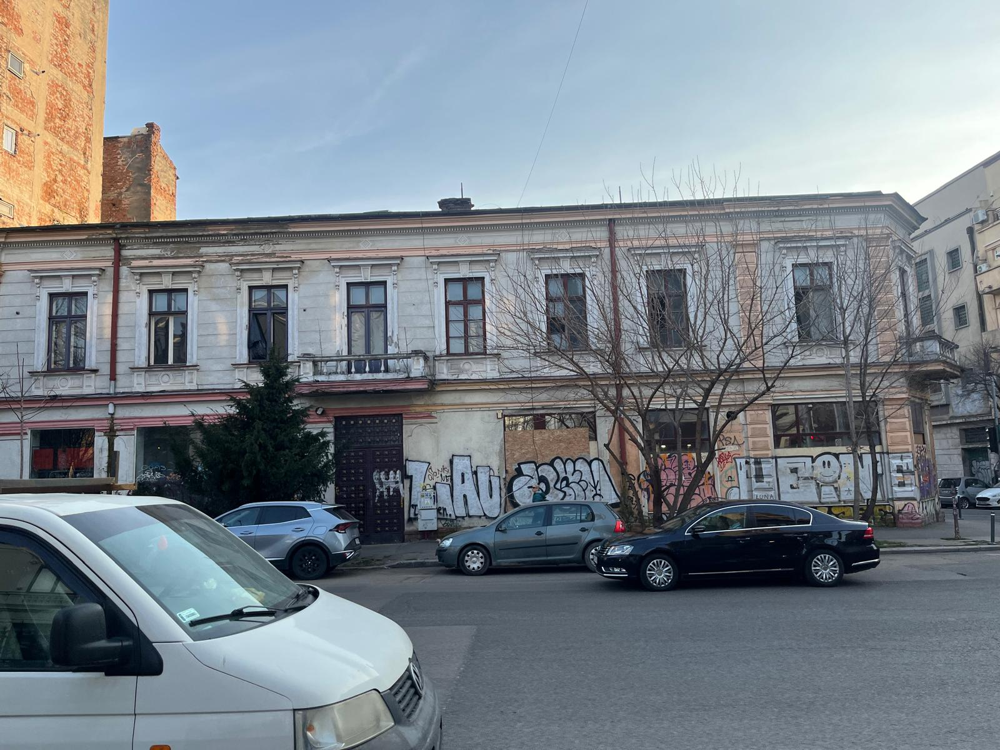
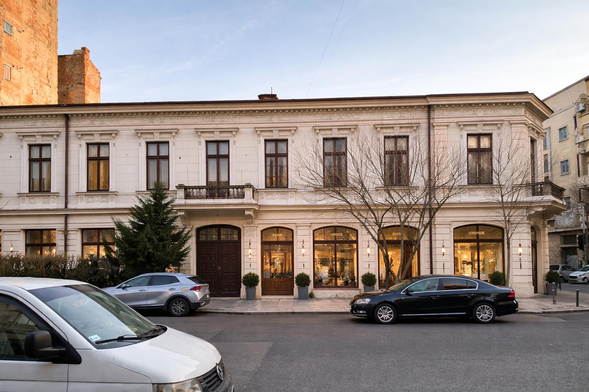

Proiectele noastre
De la consolidări structurale la restaurarea fațadelor istorice — fiecare proiect înseamnă o clădire redată comunității.
Revivo Heritage intervine asupra clădirilor publice și private cu valoare arhitecturală, istorică și culturală din București și din țară. Specialitatea noastră este reabilitarea clădirilor din centrul istoric al Bucureștiului — imobile care necesită expertize complexe, materiale compatibile cu originalul și respectarea strictă a legislației privind protecția patrimoniului.
Proiect de referință
Reabilitare Imobil Istoric — Centrul Vechi, București
● Sector 3, București

Intervenție complexă de reabilitare a unui imobil cu valoare istorică și arhitecturală din zona centrală a Bucureștiului. Lucrările au inclus consolidarea structurală a planșeelor și a fundației, restaurarea fațadei cu refacerea elementelor decorative originale din stuc și tencuială, reabilitarea completă a instalațiilor electrice, sanitare și termice, precum și reamenajarea interiorului conform normelor actuale de utilizare.
Proiectul a fost realizat în colaborare cu arhitecți și ingineri structurali, cu obținerea tuturor avizelor necesare de la autoritățile de protecție a patrimoniului, respectând cu strictețe autenticitatea materialelor și tehnicilor originale de construcție.
Restaurare Fațadă — Clădire Instituțională, București
● Sector 1, București

Restaurarea completă a fațadei unui imobil cu funcțiune instituțională, incluzând refacerea ornamentelor din piatră și tencuială decorativă, curățarea și tratarea suprafețelor, impermeabilizarea și aplicarea de tencuieli compatibile cu substratul istoric. Lucrările au respectat cerințele autorității locale și ale Ministerului Culturii.
Ce oferim
Renovare generală
Renovare și reabilitare completă a clădirilor publice și private, de la structură până la finisaje.
Restaurare patrimoniu
Restaurarea clădirilor istorice și a monumentelor, cu respectarea tehnicilor și materialelor originale.
Consolidare structurală
Lucrări de punere în siguranță și consolidare pentru clădiri cu risc seismic sau degradări structurale.
Restaurare fațade
Refacerea și restaurarea fațadelor, elementelor decorative, tencuielilor și finisajelor exterioare.
Modernizare instalații
Modernizarea instalațiilor electrice, sanitare și termice conform standardelor actuale.
Eficiență energetică
Lucrări de termoizolație și eficiență energetică în conformitate cu reglementările în vigoare.
Ai un proiect de renovare sau restaurare?
Contactează-ne pentru o evaluare inițială gratuită a imobilului tău.